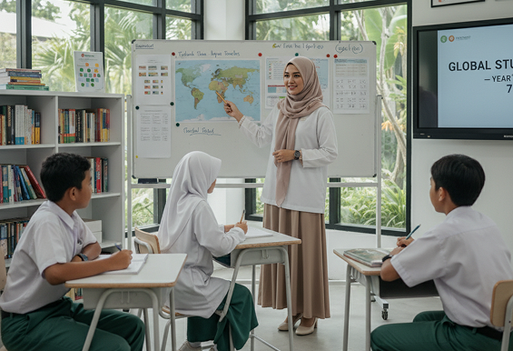

Profesional
Standar tinggi dalam setiap proses, dengan eksekusi yang rapi dan konsisten.
Penjelasan
Sekolah Islam Al Azhar Kelapa Gading hadir sebagai pengembangan pendidikan Islam modern, terinspirasi dari Universitas Al-Azhar, dengan fokus pada ilmu dan akhlak.
Nilai Alazka
Setiap nilai diterapkan secara konsisten untuk menciptakan lingkungan pendidikan yang berkualitas, adaptif, dan berorientasi pada masa depan.
Standar tinggi dalam setiap proses, dengan eksekusi yang rapi dan konsisten.
Selalu berinovasi dan membuka peluang baru melalui ide kreatif dan solusi efektif.
Berorientasi pada masa depan, membekali siswa dengan pola pikir.
Dedikasi penuh dalam menjaga kualitas, dari perencanaan hingga hasil.
Standar tinggi dalam setiap proses, dengan eksekusi yang rapi dan konsisten.
Sejarah Pendidikan
Setiap langkah menjadi bagian dari sejarah Al Azhar Kelapa Gading dalam menghadirkan pendidikan yang berlandaskan iman, ilmu, dan akhlak.

Didirikan pada tahun 1988 sebagai langkah awal menghadirkan pendidikan berkualitas, dengan fondasi nilai dan dedikasi yang terus dijaga hingga kini.
Pelajari Selengkapnya
Memperluas layanan pendidikan dan menghadirkan lingkungan belajar modern bagi siswa dari berbagai jenjang pendidikan.
Pelajari Selengkapnya
Mengadopsi kurikulum internasional Cambridge sebagai langkah strategis untuk menghadirkan standar pendidikan global.
Pelajari Selengkapnya
Mengintegrasikan teknologi dalam setiap proses pembelajaran untuk menciptakan pengalaman belajar yang lebih interaktif, adaptif, dan relevan.
Pelajari Selengkapnya